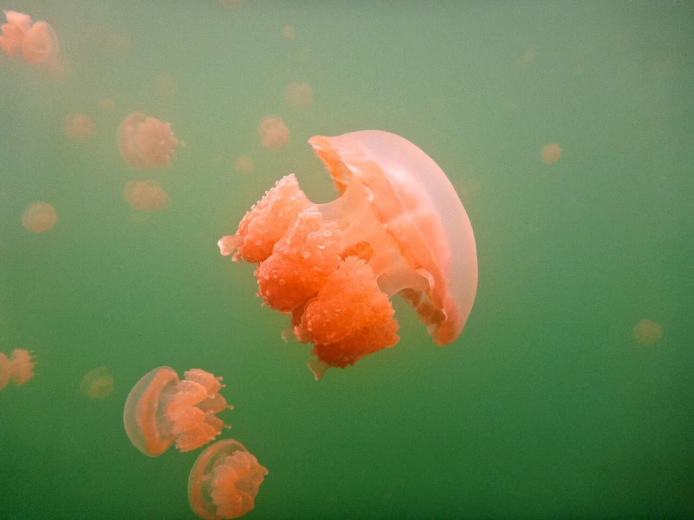

Jellyfish Lake
Eil Malk, Palaos · snorkeling

Lac marin isolé où nagent des millions de méduses presque sans venin. Une expérience surréaliste.
- Lieu
- Eil Malk, Palaos
- Niveau
- Débutant
- Activités
- snorkeling
- Type d'eau
- lake
- Coordonnées
- 7.16, 134.38 (position approximative du secteur)
Dangers à connaître
- Accès parfois fermé.
- Méduses fragiles.
Le conseil d'Ocean Buddy
Palmes lentes et pas de crème solaire : l’écosystème est fragile. L’accès peut être fermé.
Ouvrir dans Ocean Buddy Télécharger sur l'App Store
Source : Fiche Ocean Buddy · septembre 2026 · à vérifier localement.